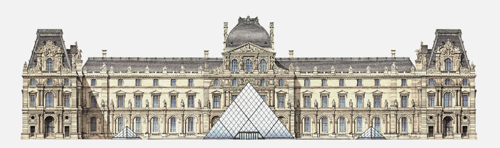
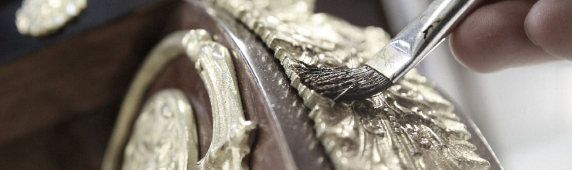

Demesne Art
庄 园 艺 术
经典法意建筑风格，跨越时空，历久弥新
北京庄园，承袭法式皇家宫殿凡尔赛宫、意大利帕拉迪奥别墅建筑风格
甄选原产于意法的石材、瓦料，续写百年不朽的经典筑作

在此之前，仅于顶奢酒店与国宾接待场所少量可见
鱼肚白石材，为巴黎圣母院、大英博物馆、美国白宫等殿堂钜制所青睐，历久而弥新
如今，意大利Carrara的鱼肚白石矿，已被列入限量开采名单
北京庄园，对岁月洗练赋予的珍稀与贵重报以无限敬畏，大量采购，用于室内装饰，成为国内首个大规模使用鱼肚白的顶豪私人不动产
此外，历经数十亿年地壳运动的德国米黄、梵蒂冈大教堂御用锡耶纳金，与意大利米兰大教堂广场同矿开采的小料石等多种珍贵石材
分别自原产地跋涉而来，汇聚于庄园，成为233席别墅共同的庄严表情

一座可以居住的欧洲别墅装饰艺术博物馆
数百年欧洲家私发展史，是人类智慧和艺术精粹的集成，是数代工匠的专注与传承，用双手写就的瑰丽文明
北京庄园，历经20余载酝酿，以深刻、独到的造墅理念，收获全球诸多顶级品牌的橄榄枝
仅选用其中最高端产品系中的最顶级产品
不仅让别墅，成为具有极高历史价值、文化价值的人居作品，甚至影响到中国别墅未来20年关于“全成品交付”定义的革新

庞大而丰富的别墅腑脏系统
北京庄园，尤其注重佣人生活区、机电间、储藏间等支持空间的尺度
将佣人房扩展为佣人生活区，为各个机电系统规划各自独立的装载空间，同时预留空间，便于日后设备的升级和增加，百分百释放功能
庞大的庄园系统得以健康有序地运转
返回首页